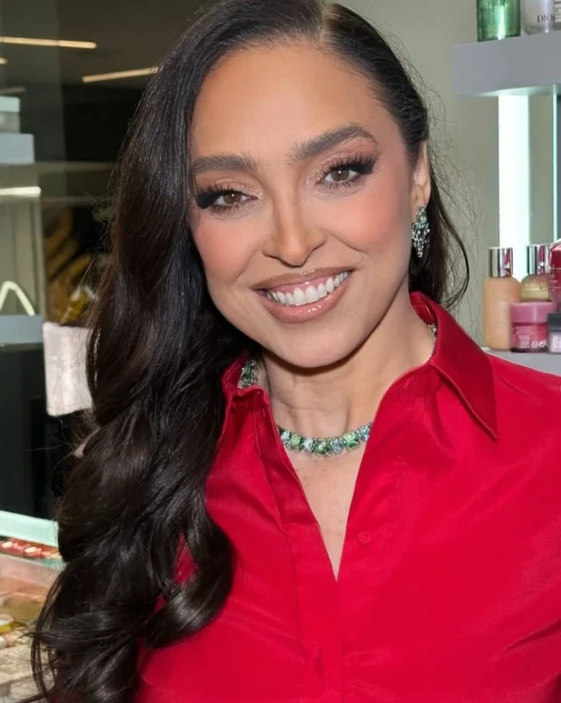

Rinoplastia & cirurgia da face
Dra. Leila Freire
Otorrinolaringologista dedicada à Rinoplastia e Cirurgia Plástica da Face.
- Board Latino-Americano em Cirurgia Plástica da Face.
- Pós-doutorado pela Santa Casa de São Paulo, com desenvolvimento de treinamento inovador em modelo animal para Rinoplastia.
- Doutorado pela FAMERP, com desenvolvimento de técnica inovadora para redução da base nasal na Rinoplastia.
- Fellowship em Cirurgia Plástica da Face pela USP.
- Residência Médica em Otorrinolaringologia pela USP.
- Palestrante em congressos nacionais e internacionais.
Consulta presencial em São Paulo ou on-line
CRM-SP 105717 · RQE 35239
Sobre a Dra. Leila
Antes de se dedicar à estética facial, a Dra. Leila construiu sua trajetória na Otorrinolaringologia, especialidade que lhe permite compreender o nariz de forma integral, considerando tanto a harmonia estética quanto a função respiratória.
Sua atuação acadêmica inclui uma tese de doutorado dedicada à redução da base nasal, na qual desenvolveu uma proposta de sequência cirúrgica própria para o procedimento.
Além da prática clínica e cirúrgica, dedica-se à formação e ao aperfeiçoamento de outros especialistas, compartilhando seus conhecimentos por meio de aulas, mentorias e palestras em congressos no Brasil e no exterior.
- Board Latino-americano em Cirurgia Plástica da Face
- Pós-doutorado
- Faculdade de Ciências Médicas da Santa Casa de São Paulo
- Doutorado
- Faculdade de Medicina de São José do Rio Preto (FAMERP)
- Fellowship em Cirurgia Plástica Facial
- Universidade de São Paulo (USP)
- Título de especialista em Otorrinolaringologia
- AMB e ABORL-CCF
- Residência médica em Otorrinolaringologia
- Universidade de São Paulo (USP)
- Palestrante e professora
- Congressos nacionais e internacionais

A consulta
Uma hora inteira com a própria Dra. Leila
Não realizamos orçamentos de cirurgias por mensagem, pois cada nariz apresenta características únicas e exige um planejamento individualizado. Somente após uma avaliação presencial, a Dra. Leila poderá compreender suas necessidades, definir a melhor abordagem e apresentar uma proposta adequada ao seu caso.
A consulta é o primeiro passo para um planejamento seguro, personalizado e alinhado às suas expectativas.
- Duração
- 1 hora, com a própria Dra. Leila
- Formato
- Presencial em São Paulo ou on-line
- O que é feito
-
Uma consulta completa, personalizada e detalhada, na qual a Dra. Leila realiza uma análise criteriosa, esclarece todas as suas dúvidas e apresenta as possibilidades mais adequadas para o seu caso.
Além disso, a consulta inclui simulações computadorizadas, permitindo visualizar as possibilidades e compreender melhor os resultados esperados, com mais segurança e confiança para tomar sua decisão.
Tudo isso com a atenção, o cuidado e a experiência da própria Dra. Leila, para que você tenha uma experiência completa e esclarecedora.
- Valor
- Consulta particular. A equipe informa o valor pelo WhatsApp
- Depois
- Caso haja indicação cirúrgica, você receberá todas as informações sobre os honorários médicos e os custos hospitalares, com total transparência e clareza para que possa se planejar com tranquilidade.
Passo a passo do seu atendimento
-
Agendamento pelo WhatsApp
Entre em contato com nossa equipe para receber informações sobre o valor da consulta e os horários disponíveis. Será um prazer orientar você.
-
Consulta individualizada
Realize sua consulta presencial ou on-line, com duração de 1 hora, dedicada à compreensão das suas necessidades e expectativas.
-
Planejamento personalizado
Após a avaliação, você receberá um plano de tratamento individualizado, com as etapas, os prazos e os valores apresentados com transparência.
-
Acompanhamento contínuo
A Dra. Leila Freire e sua equipe estarão ao seu lado em cada etapa, oferecendo orientação e acompanhamento para que você se sinta segura e amparada durante todo o processo.
Perguntas frequentes
Quanto custa uma Rinoplastia com a Dra. Leila?
Os valores referentes aos honorários médicos e aos custos hospitalares são informados após a consulta com a Dra. Leila.
Durante a avaliação, a Dra. Leila realiza um exame detalhado e define o planejamento cirúrgico mais adequado para o seu caso. Como cada procedimento é individualizado, os valores podem variar de acordo com a complexidade da cirurgia e a estrutura hospitalar necessária.
Dá para ter pelo menos uma média de valor pelo WhatsApp?
Sem uma avaliação individualizada, não seria possível informar um valor de cirurgia com precisão, pois cada caso exige um planejamento específico. Para evitar informações imprecisas, a equipe informa previamente apenas o valor da consulta, momento em que a Dra. Leila poderá avaliar suas necessidades e orientar sobre as possibilidades de tratamento.
Quanto custa a consulta?
A consulta é particular e o valor é informado pela equipe no WhatsApp. Ela dura 1 hora e inclui avaliação completa da face, indicação das melhores opções de tratamento ou cirurgia e esclarecimento de todas as dúvidas.
A consulta pode ser on-line?
A Dra. Leila realiza consultas presenciais em seu consultório, em São Paulo - Pinheiros, e também oferece atendimento on-line, proporcionando mais praticidade e acessibilidade para pacientes de outras cidades.
A Dra. atende convênio?
A consulta é realizada de forma particular. Para obter informações sobre cobertura do plano de saúde e possibilidade de reembolso, entre em contato com nossa equipe pelo WhatsApp. Teremos prazer em orientá-lo(a).
Em quais hospitais a Dra. Leila opera?
- Hospital Israelita Albert Einstein
- Hospital Alemão Oswaldo Cruz
- Hospital Vila Nova Star
- Hospital Santa Catarina
- Hospital Paulista
- Hospital São Luiz Morumbi
- Hospital São Luiz Itaim
- Hospital São Luiz Osasco
Tem idade mínima ou máxima?
A Dra. Leila atende pacientes de diferentes faixas etárias. A indicação e o momento adequado para cada procedimento são definidos individualmente, após uma avaliação criteriosa durante a consulta.
Antes de falar com a equipe
São cinco perguntas rápidas. As respostas vão junto na sua mensagem, assim a equipe já sabe o que você procura.
1 de 5
O que você gostaria de mudar?
Em que ponto você está?
Para quando você pensa nisso?
A consulta seria presencial ou on-line?
A consulta é particular e dura 1 hora. Isso funciona para você?
Agendar consulta
O agendamento é feito pela equipe, no WhatsApp.
Para a equipe saber com quem está falando:
Marque a caixa acima para liberar o botão.
Ao continuar, você concorda em ser contatado pelo WhatsApp. Veja a Política de privacidade.
Endereço
Rua Capote Valente, 4325º andar, sala 55 · Pinheiros
São Paulo – SP · 05409-001
Segunda a sexta, das 8h às 18h
(11) 3064-2676
Marque sua consulta com a Dra. Leila
Presencial em São Paulo ou on-line
Segunda a sexta, das 8h às 18h